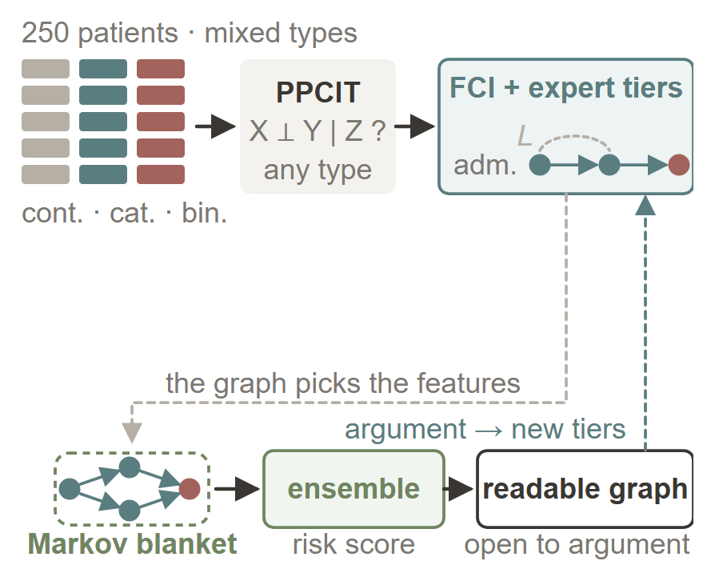

Problem · method · resultsHAPI
Risk flagged upstream — with a graph you can argue with
After spinal cord injury, a pressure injury becomes visible only once the damage is done, and today's risk forms give a score with no reason. Mixed-variable graphical modelling learns a causal graph of the risk factors from 250 patients, with clinicians' timeline orienting the arrows, and predicts from that graph. The readable graph costs nothing in accuracy; its edges are hypotheses to argue with, not facts.
- AUROC 0.952 with the full Markov blanket (nested CV)
- Admission-time features alone: balanced accuracy 0.925 (held-out split)